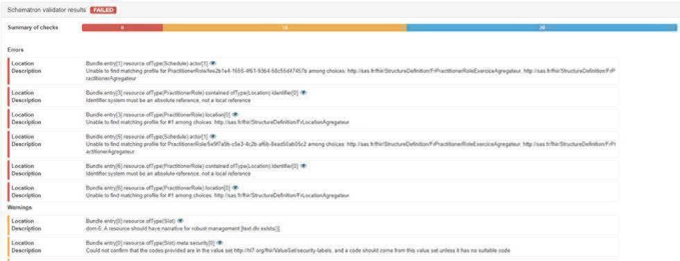
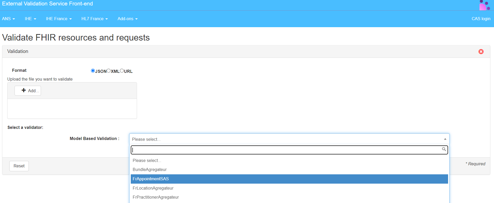
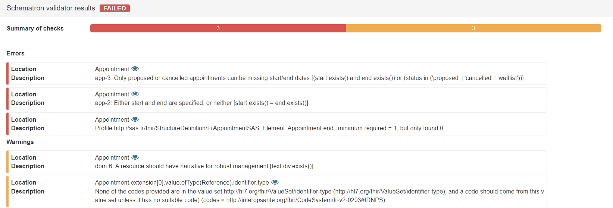

Service d'Accès aux Soins
0.1.0 - ci-build

Service d'Accès aux Soins
0.1.0 - ci-build

Service d'Accès aux Soins - Local Development build (v0.1.0) built by the FHIR (HL7® FHIR® Standard) Build Tools. See the Directory of published versions
This page provides a list of the FHIR artifacts defined as part of this implementation guide.
Ces structures définissent les contraintes sur les ressources FHIR par les systèmes conformes à cet Implementation Guide (IG).
Profil |
Description |
Profil de Bundle qui représente le flux de réponse contenant les créneaux disponibles dans le cadre du service d’aggrégation de créneaux de la plateforme SAS (Service d’accès aux soins) |
|
Profil de Location, dérivé de FrLocation, pour le service d’aggrégation de créneaux de la plateforme SAS (Service d’accès aux soins) |
|
Profil de Practitioner, dérivé de FrPractitioner, pour le service d’aggrégation de créneaux de la plateforme SAS (Service d’accès aux soins) |
|
Profil de PractitionerRole, dérivé de FrPractitionerRoleExercice, pour le service d’aggrégation de créneaux de la plateforme SAS (Service d’accès aux soins) |
|
Profil de Schedule, dérivé de FrSchedule, pour le service d’aggrégation de créneaux de la plateforme SAS (Service d’accès aux soins) |
|
Profil de Slot, dérivé de FrSlot, pour le service d’aggrégation de créneaux de la plateforme SAS (Service d’accès aux soins) |
Cette section détaille les nomenclatures à utiliser afin de renseigner les différents éléments codifiés de la réponse.
free.coding, ou sous la forme d’un texte libre au niveau de l’élément text.origin à l’URL transmise par l’éditeur au moment de la redirection pour identifier la provenance.Le validateur mis à disposition des développeurs dans le cadre du projet SAS offre la possibilité tester le format des bundles de réponse générés. Il permet de vérifier que les réponses sont correctement formatées, que l’ensemble des informations obligatoires sont bien présentes et que les données codifiées exploitent les bonnes nomenclatures. Pour que le validateur puisse effectuer correctement les contrôles au niveau de la structure, il est nécessaire de renseigner pour chacun des “resourceType” correspondant, le meta.profile “URL” ci-dessous :
Ci-dessous un exemple :
"resourceType": "Bundle",
"id": "8cbb33dc-779e-45e9-a5f6-ea66101288c5",
"meta": {
"profile": [
"http://sas.fr/fhir/StructureDefinition/BundleAgregateur"
]
},
Le validateur est disponible sur l’espace de test de l’ANS : https://interop.esante.gouv.fr/EVSClient/fhir/validator.seam?standard=FHIR%20(SAS)&extension=SAS. Pour faciliter les tests et conserver l’historique, nous vous recommandons de créer votre compte sur la plateforme.
Afin de tester un fichier, il suffit de sélectionner le format JSON, d’ajouter le fichier via le bouton Add…, de sélectionner le modèle FrBundleAgregateurSAS puis de cliquer sur valider :

|
| Figure 1 - Accès au validateur agrégateur de créneaux |
Vous obtiendrez alors un rapport de test mettant en valeur les erreurs bloquantes et les différents warning :
|

|
| Figure 2 - Rapport validateur agrégateur de créneaux |
Ces structures définissent les contraintes sur les ressources FHIR par les systèmes conformes à cet Implementation Guide (IG).
Profil |
Description |
Profil de Appointment, dérivé de FrAppointment, pour le service de prise de rendez-vous de la plateforme SAS (Service d’accès aux soins) |
Cette section détaille les nomenclatures à utiliser afin de renseigner les différents éléments codifiés de la requête.
http://interopsante.org/fhir/StructureDefinition/FrAppointmentOperator.type.coding.code est valorisé à IDNPS et type.coding.system à http://interopsante.org/fhir/CodeSystem/fr-v2-0203.INTRN et type.coding.system à http://interopsante.org/fhir/CodeSystem/fr-v2-0203.type.coding.code est valorisé à IDNPS et type.coding.system à http://interopsante.org/fhir/CodeSystem/fr-v2-0203Un validateur mis à disposition des développeurs dans le cadre du projet SAS offre la possibilité de tester le format des requêtes POST et PUT à générer. Il permet de vérifier que les requêtes sont correctement formatées, que l’ensemble des informations obligatoires sont bien présentes et que les données codifiées exploitent les bonnes nomenclatures.
Pour que le validateur puisse effectuer correctement les contrôles au niveau de la structure, il est nécessaire de renseigner pour le resourceType Appointment, le meta.profile URL ci-après :
Ci-dessous un exemple :
"resourceType": "Appointment",
"id": "1",
"meta": {
"profile": [
"http://interopsante.org/fhir/StructureDefinition/FrAppointmentSAS"
]
},
Le validateur est disponible sur l’espace de test de l’ANS : https://interop.esante.gouv.fr/EVSClient/fhir/validator.seam?extension=SAS&standard=FHIR+%28SAS%29&type=FHIR&cid=750. Pour faciliter les tests et conserver l’historique, nous vous recommandons de créer votre compte sur la plateforme.
Afin de tester un fichier, il suffit de sélectionner le format JSON, d’ajouter le fichier via le bouton Add…, de sélectionner le modèle FrAppointmentSAS puis de cliquer sur valider :
|

|
| Figure 3 - Accès au validateur rendez-vous |
Vous obtiendrez alors un rapport de test mettant en valeur les erreurs bloquantes et les différents warning :
|

|
| Figure 4 - Rapport validateur rendez-vous |